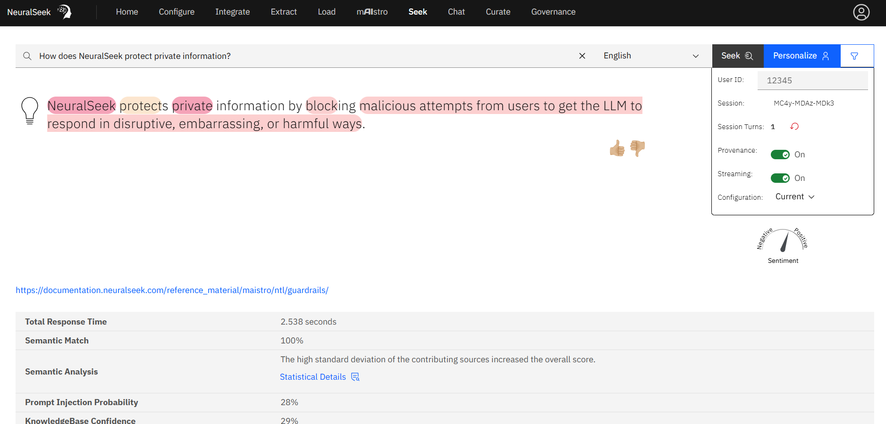

Funcionalidades avanzadas
Detección de PII
¿Qué es?
- NeuralSeek cuenta con una rutina avanzada de detección de información de identificación personal (PII) que identifica automáticamente cualquier PII dentro de las entradas de los usuarios. Permite a los usuarios marcar, enmascarar, ocultar o eliminar el PII detectado.
¿Por qué es importante?
- Los usuarios pueden mantener un entorno seguro mientras proporcionan respuestas precisas a las consultas de los usuarios, asegurando el cumplimiento de las regulaciones de privacidad de datos y protegiendo la información confidencial.
¿Cómo funciona?
- La detección de PII común y conocida está habilitada de forma predeterminada en NeuralSeek. Cuando ingresa información de PII, por ejemplo, cuando ingresa un número de tarjeta de crédito en Seek:

En NeuralSeek, la pregunta anterior se registrará y se marcará como que contiene información de PII y advertirá al usuario sobre un posible riesgo.

El número de tarjeta de crédito también se enmascara y elimina, de modo que los datos estén protegidos de ser vistos. Las respuestas a estas preguntas también indican que se generaron a partir de una pregunta con PII, para que pueda identificarlas fácilmente.

Definir un PII específico
Sin embargo, esto es lo que NeuralSeek hace contra los patrones de PII comunes, y puede haber un PII específico que le gustaría ocultar para sus necesidades comerciales específicas. Si desea ayudar a NeuralSeek a detectar y procesar mejor el PII para eso, puede configurarlo en Configurar > Manejo de información de identificación personal (PII) en el menú superior:

Cómo funciona se basa en una oración de ejemplo y no tiene que ser un patrón o reglas exactos. Por ejemplo, establecer la oración de ejemplo como:
Para cada elemento de PII en esa oración, puede definir los elementos de PII en esa oración delimitados por coma de la siguiente manera:
Entonces, la próxima vez que alguien ingrese un PII que coincida con el ejemplo de la siguiente manera:
NeuralSeek ahora detecta eso y enmascara el grupo sanguíneo que el usuario proporcionó para que no se exponga:

Ignorar ciertos PII
También puede hacer que NeuralSeek ignore ciertos PII ingresando "No PII" al elemento. Por ejemplo, al establecer el elemento como "No PII" con una oración de ejemplo dada, NeuralSeek no filtrará la pregunta a pesar de que contendría un elemento de PII:

Por lo tanto, cuando se le pregunta sobre una pregunta similar, observe cómo el nombre del perro ahora es visible como información que no es PII:

La razón principal para usar esto es que a veces, NeuralSeek confundiría ciertas preguntas como que contienen PII, incluso cuando la oración claramente no contiene ningún dato de ese tipo. En ese caso, establecer qué no considerar como PII sería muy útil.
Registro de ida y vuelta
¿Qué es?
- El registro de ida y vuelta es un proceso que implica registrar y almacenar todas las interacciones entre un usuario y un Agente Virtual. NeuralSeek admite recibir registros de Agentes Virtuales para monitorear las respuestas seleccionadas. Esto incluye la pregunta del usuario, la respuesta del Agente Virtual y cualquier pregunta o aclaración adicional.
¿Por qué es importante?
- El propósito del registro de ida y vuelta es mejorar el rendimiento del Agente Virtual al alertar sobre el contenido en el Agente Virtual que probablemente esté desactualizado, porque la documentación fuente ha cambiado.
¿Cómo funciona?
- El Agente Virtual de origen está conectado a NeuralSeek a través de las instrucciones específicas por plataforma en la pestaña Integrar. Una vez conectado, NeuralSeek monitoreará los intents que se están utilizando en vivo en el Agente Virtual. Una vez al día, NeuralSeek buscará en la Base de Conocimiento conectada y volverá a calcular el hash de los datos devueltos. Ese hash se comparará con el hash de las respuestas almacenadas, y si no se encuentra una coincidencia, se generará una alerta que notificará que la documentación de origen ha cambiado en comparación con la última generación de respuestas completada por el punto final de búsqueda.
Análisis Semántico
¿Qué es?
- NeuralSeek genera respuestas utilizando directamente el contenido de fuentes corporativas. Para garantizar la transparencia entre las fuentes y las respuestas, NeuralSeek revela el origen específico de las palabras y frases que se generan. La claridad se logra aún más mediante el empleo de puntajes de coincidencia semántica. Estos puntajes comparan la respuesta generada con la documentación de referencia, proporcionando una comprensión clara de la alineación entre la respuesta y el significado transmitido en los documentos de origen. Esto asegura la precisión y genera confianza en la confiabilidad de las respuestas generadas por NeuralSeek.
{kind=link}
¿Por qué es importante?
- Al poder analizar cómo se originaría la respuesta generada a partir de los hechos reales proporcionados por la Base de Conocimiento, los usuarios pueden analizar de qué fuentes se originaron realmente las respuestas y cuánto de las respuestas proviene directamente del conocimiento versus cuánto de ellas son de las respuestas generadas por LLM. Esto asegura la precisión y genera confianza en la confiabilidad de las respuestas generadas por NeuralSeek.
Por ejemplo, el Seek de NeuralSeek proporcionará un rico análisis semántico en términos de qué tan bien la respuesta cubre los hechos encontrados en la Base de Conocimiento (o las respuestas generadas en caché) mediante la codificación por colores del área de la misma en la respuesta, vinculándola visualmente a las fuentes y proporcionando el resultado del análisis semántico para explicar las razones clave detrás del puntaje de coincidencia semántica otorgado.

¿Cómo funciona?
- Cuando NeuralSeek recibe una pregunta, primero intentará hacer coincidir los intents y respuestas existentes, también intentará buscar en la Base de Conocimiento corporativa subyacente y devolver los pasajes relevantes de una serie de fuentes. NeuralSeek luego usará estas respuestas tal cual directamente, o usará partes de la información para formar una respuesta utilizando la capacidad de IA generativa de LLM.
Configurar el Análisis Semántico
La opción de configuración para el análisis semántico se encuentra en "Configurar > Umbrales de confianza y advertencia". El modelo de puntaje semántico está habilitado de forma predeterminada, pero también se puede deshabilitar. También se puede habilitar si el análisis semántico debe usarse para la confianza y para reordenar los resultados de búsqueda de la base de conocimiento de acuerdo con cuánto coinciden semánticamente. También hay secciones para controlar cómo el análisis puede aplicar penalizaciones por términos clave faltantes, términos de búsqueda o qué tan frecuente se saltan las fuentes (fragmentadas en la respuesta generada).

❓ ¿Cómo puede ser útil reordenar los resultados de búsqueda utilizando el análisis semántico? Tener la opción de reordenar los resultados de búsqueda de la Base de Conocimiento resultante puede asegurar que la lista de resultados de búsqueda aparezca en el orden que se corresponde mejor con la respuesta proporcionada. Esto se debe a que a veces los resultados de búsqueda devueltos desde la Base de Conocimiento no se alinean perfectamente con la respuesta, y por lo tanto la URL proporcionada del documento resultante puede ser engañosa.
Usar el Análisis Semántico
En la pestaña 'Seek' de NeuralSeek, puede proporcionar una pregunta y se le dará una respuesta de NeuralSeek. Al habilitar la 'Procedencia', esto le dará la porción con código de color de la respuesta que se originó directamente de esos resultados.
{kind=link}
Debajo de la respuesta, verá algunas de las ideas clave relacionadas con la respuesta, como el Puntaje de coincidencia semántica (en %), el Análisis semántico, así como los resultados provenientes de la Base de conocimientos en términos de Confianza de la base de conocimientos, Cobertura de la base de conocimientos, Tiempo de respuesta de la base de conocimientos y Resultados de la base de conocimientos.
{kind=link}
El porcentaje de coincidencia semántica es el 'puntaje' general que indica cuánto cree NeuralSeek que las respuestas están bien alineadas con la verdad subyacente (de la Base de conocimientos). Mientras más alto sea el porcentaje, más precisa y relevante será la respuesta en función de la verdad.
El Análisis semántico explica por qué NeuralSeek calculó el puntaje de coincidencia de una manera que es fácil de entender para los usuarios. Al leer este resumen, a los usuarios se les da una buena comprensión de por qué se le dio a la respuesta un puntaje alto o bajo.
La confianza, cobertura, tiempo de respuesta y resultados de la base de conocimientos provienen de la propia Base de conocimientos. Estos porcentajes indican el nivel de confianza y cobertura, lo que indica hasta qué punto la Base de conocimientos cree que las fuentes recuperadas son relevantes para la pregunta proporcionada.

Los contextos de la Base de conocimientos son los 'fragmentos' de las fuentes de la Base de conocimientos, en función de la relevancia de lo que encontró dentro de sus datos. Al hacer clic en uno de ellos, se revelaría el pasaje encontrado, y se usaría el código de color que coincide con el de la respuesta generada para resaltar las partes que se utilizaron.

Por último, se muestra el discurso preparado que se define en la configuración de NeuralSeek y se codifica en color según cuánto se usó en la respuesta.

Si se pregunta dónde se almacena el discurso preparado, puede encontrarlo en la sección Configurar > Preferencias de la empresa / organización:
{kind=link}
Configuración de la penalización por fecha o el rango de puntaje
El resultado de la Base de conocimientos resultante se ve afectado por la configuración que establezca para la Base de conocimientos corporativa que está utilizando con NeuralSeek. Puede encontrar estos ajustes en la sección Configurar > Detalles de la Base de conocimientos corporativa:

- El rango de puntaje del documento dicta el rango de posibles 'puntajes de relevancia' que devolverá como resultado. Por ejemplo, si el rango de puntaje es del 80%, los resultados tendrán un puntaje de relevancia mayor al 20% y menor o igual al 100%. Si el rango de puntaje es del 20%, el rango de puntaje de relevancia sería entonces cualquier cosa entre el 80% y el 100%, respectivamente.
- La penalización por fecha del documento, si se especifica un valor mayor que 0%, comenzará a imponer puntajes de penalización para reducir la relevancia en función de la antigüedad de la información que se obtiene. La Base de conocimientos intentará encontrar cualquier información relacionada con el tiempo en el documento y reduciría el puntaje en función de la antigüedad de la información, en relación con la hora actual.

Cuando los resultados dicen: '4 filtrados por penalización por fecha o rango de puntaje', significa que estos ajustes entraron en juego al recuperar información relevante de la Base de conocimientos.
Ejemplos de análisis semántico
Ejemplo de puntaje alto 
{kind=link}
Ejemplo de puntaje medio

Ejemplo de puntaje bajo

Análisis de sentimiento
¿Qué es? - El análisis de sentimiento de NeuralSeek es una función que permite a los usuarios analizar el sentimiento o tono emocional de un texto. Puede determinar si el sentimiento expresado en el texto es positivo, negativo o neutral. El análisis de sentimiento de NeuralSeek se basa en técnicas avanzadas de procesamiento del lenguaje natural y puede proporcionar información valiosa para empresas y organizaciones.
¿Por qué es importante?
- Al poder detectar si un usuario es negativo o positivo sobre ciertas preguntas, puede permitir que el agente virtual use esta información para proporcionar servicios más personalizados. Por ejemplo, para un usuario que expresa un sentimiento negativo, los agentes virtuales podrían transferir la sesión a agentes humanos o asignar una prioridad más alta para que se pueda prestar más atención.
¿Cómo funciona?
- NeuralSeek realizará un análisis de sentimiento del texto de entrada del usuario. El sentimiento se devuelve como un número entero entre cero (0) y nueve (9), siendo cero (0) el más negativo, nueve (9) el más positivo y cinco (5) el neutral.
Ejemplo
Al usar la API REST, por ejemplo, proporcionar comentarios negativos podría desencadenar una puntuación de análisis de sentimiento baja.
{
question: No me gusta NeuralSeek,
context: {},
user_session: {
metadata: {
user_id: string
},
system: {
session_id: string
}
},
Lo que daría como resultado una respuesta con una puntuación de sentimiento baja:
{
answer: Lo siento, me entristece escuchar que no te gusta NeuralSeek. Si tienes alguna inquietud o comentario específico, házmelo saber y haré todo lo posible por ayudarte.,
cachedResult: false,
langCode: string,
sentiment: 3,
totalCount: 9,
KBscore: 3,
score: 3,
url: https://neuralseek.com/faq,
document: FAQ - NeuralSeek,
kbTime: 454,
kbCoverage: 24,
time: 2688
}
Observe la puntuación de sentimiento de 3, que está en el rango bajo de 0 a 10. Por otro lado, si expresas un sentimiento positivo de la siguiente manera:
{
question: Realmente amo NeuralSeek. Es el mejor software del mundo.,
context: {},
user_session: {
metadata: {
user_id: string
},
system: {
session_id: string
}
},
La respuesta tendrá una puntuación de sentimiento más alta:
{
answer: Gracias por compartir tus comentarios positivos sobre NeuralSeek. No puedo tener opiniones personales, pero me alegro de escuchar que consideres que NeuralSeek es el mejor software del mundo.,
cachedResult: false,
langCode: string,
sentiment: 9,
totalCount: 9,
KBscore: 15,
score: 15,
url: https://neuralseek.com/faq,
document: FAQ - NeuralSeek,
kbTime: 5385,
kbCoverage: 8,
time: 7094
}
Replay
¿Qué es?
- La función Replay en NeuralSeek permite a los usuarios volver a visitar las preguntas y respuestas registradas anteriormente, el análisis semántico y la documentación de la Base de Conocimiento utilizada para generar la respuesta en ese momento.
¿Por qué es importante?
- A medida que se actualiza la documentación de nuestra Base de Conocimiento, las preguntas de la pestaña Seek se actualizan para tener en cuenta esa nueva información. Como resultado, un usuario podría hacer una pregunta idéntica a una hecha anteriormente y recibir una respuesta completamente diferente si la documentación se ha modificado significativamente. Si uno quiere volver a una respuesta anterior y notar los cambios que ocurrieron en la documentación para ver cómo evolucionan las respuestas, la función de Reproducción es muy útil para obtener algo de información.
¿Cómo funciona?
- Primero, asegúrate de tener habilitado el registro corporativo con una instancia de Elasticsearch. Puedes encontrar la configuración para el registro corporativo debajo de la pestaña
Configurar.
{kind=link}
- Navega a la pestaña
Registrosen Neuralseek. Allí, encontrarás un registro de todas las preguntas y respuestas previamente realizadas desde la pestañaBuscar. Fíjate en el pequeño icono debajo de la respuesta que se parece a un reloj girando hacia atrás. Al hacer clic en él, serás llevado a la página tal como apareció en ese momento específico.


- Si la documentación utilizada para responder a la pregunta ha sido actualizada, puedes comparar y contrastar los resultados haciendo la misma pregunta en la pestaña
Buscar.


Comprensión de tablas
¿Qué es?
- La extracción de tablas, también conocida como
Comprensión de tablas, preprocesa tus documentos para extraer y analizar los datos de las tablas en un formato adecuado para consultas conversacionales. Dado que este proceso de preparación es tanto costoso como prolongado, esta función es de activación manual y consumirá 1 consulta de búsqueda por cada tabla preprocesada. Además, cabe señalar que las colecciones de rastreo web no son elegibles para la comprensión de tablas, ya que el intervalo de rerastreo provocará un uso excesivo de la computación. El tiempo de preparación de la tabla tarda varios minutos por página.
¿Por qué es importante?
- Poder entender los datos en estructura tabular en los documentos y generar respuestas es una capacidad importante para NeuralSeek con el fin de encontrar mejor los datos relevantes para responder.
¿Cómo funciona?
- Para encontrar la extracción de tablas, abre tu instancia de NeuralSeek y dirígete a la pestaña
Configurar. - Selecciona Comprensión de tablas
⚠️ Nota para usuarios de planes lite/prueba: para poder acceder y usar esta función, deberás comunicarte con cloud@cerebralblue.com con los detalles de tu oportunidad y caso de uso para ser elegible.
-
Una vez que tengas todo configurado, ve a
Watson Discoveryy, si aún no lo has hecho,crea un proyecto e importa un archivo PDFque contenga algunas tablas. -
Una vez que tengas la información del proyecto, vuelve a la pestaña
Configuraren NeuralSeek. Desplázate hacia abajo hasta Comprensión de tablas, pega el ID del proyecto, guarda y pasa a la pestañaBuscar. -
Con todo configurado, haz algunas preguntas relacionadas con los datos dentro de la tabla del archivo PDF.
También puedes hacer preguntas sobre un lugar o nombre específico y, si hay varias tablas con datos, NeuralSeek tomará de cada tabla y te proporcionará todo.
Modelos de lenguaje multimodales en mAIstro
¿Qué es?
Las capacidades multimodales en los modelos de lenguaje grandes (LLM) se refieren a su capacidad para procesar y generar contenido a través de múltiples modalidades, como texto, imágenes e incluso audio. Esto permite que los LLM entiendan e interactúen con el mundo de una manera más holística y natural, yendo más allá de las interacciones tradicionales basadas en texto.
¿Por qué es importante?
Las capacidades multimodales son cruciales para una amplia gama de aplicaciones, particularmente en áreas como respuesta a preguntas visuales, subtitulado de imágenes y generación de texto a partir de imágenes. Estas capacidades permiten que los LLM entiendan y razonen sobre el mundo de una manera más integral, lo que permite interacciones más intuitivas y amigables para el usuario.
¿Cómo funciona?
Los LLM multimodales suelen aprovechar técnicas como el aprendizaje por transferencia, donde el modelo se entrena primero en un gran corpus de datos de texto y luego se ajusta en conjuntos de datos que combinan texto e imágenes. Esto permite que el modelo aprenda las relaciones entre la información visual y textual, lo que le permite generar respuestas relevantes y coherentes a consultas que involucran ambas modalidades.